# Instalar si es necesario:
# install.packages("ggplot2")
# install.packages("dplyr")
# install.packages("patchwork")
library(ggplot2)
library(dplyr)
library(patchwork)Visualizaciones integradas con Patchwork: combinando gráficos en R
1 Introducción
En el análisis de datos, la visualización es una herramienta esencial para comunicar resultados de forma clara y efectiva. El paquete ggplot2 se ha consolidado como una de las herramientas más potentes y flexibles para generar gráficos en R, permitiendo construir visualizaciones personalizadas y de alta calidad.
Sin embargo, en muchos casos es necesario combinar varios gráficos en una sola figura —por ejemplo, para comparar patrones, mostrar relaciones entre variables o integrar diferentes perspectivas de un mismo conjunto de datos.
El paquete patchwork surge precisamente como una solución elegante y sencilla a esta necesidad. Creado por Thomas Lin Pedersen, patchwork permite unir múltiples objetos de ggplot2 utilizando operadores intuitivos como +, / y |, sin necesidad de recurrir a funciones más complejas como gridExtra o cowplot.

Entre sus principales ventajas destacan:
- Simplicidad sintáctica: la unión de gráficos se realiza de manera natural, similar a una operación aritmética.
- Flexibilidad en el diseño: se pueden crear composiciones horizontales, verticales o con diseños personalizados.
- Integración completa con ggplot2: conserva los temas, escalas y leyendas originales.
- Posibilidad de anotaciones globales: mediante plot_annotation() se pueden agregar títulos, subtítulos o pies de figura que apliquen a toda la composición.
En esta práctica aprenderás a:
1. Crear varios gráficos a partir del conjunto de datos msleep.
2. Unirlos en diferentes disposiciones (horizontal, vertical y combinada).
3. Ajustar la disposición y diseño de las figuras.
4. Agregar títulos y anotaciones generales.
5. Guardar la figura final como un archivo de imagen.
2 Acerca del conjunto de datos msleep
El conjunto de datos msleep recopila información sobre la duración del sueño y las características biológicas de diferentes especies de mamíferos.
Cada fila representa una especie de mamífero e incluye variables sobre su taxonomía, peso corporal, horas de sueño y tipo de alimentación.
| Variable | Descripción |
|---|---|
name |
Nombre común de la especie |
genus, vore, order |
Clasificación taxonómica (género, tipo de dieta y orden) |
conservation |
Estado de conservación según la UICN |
sleep_total |
Horas promedio de sueño total por día |
sleep_rem |
Horas de sueño REM (movimiento ocular rápido) |
sleep_cycle |
Duración del ciclo de sueño (en horas) |
awake |
Horas promedio que el animal permanece despierto |
bodywt |
Peso corporal promedio (en kilogramos) |
brainwt |
Peso del cerebro promedio (en kilogramos) |
Este conjunto contiene 83 especies y 11 variables, lo que permite explorar relaciones entre el tamaño corporal, la dieta y los patrones de sueño.
Por su diversidad de variables, msleep resulta ideal para practicar visualización, manipulación de datos y combinación de gráficos con patchwork.
3 Objetivo
Aplicar el uso del paquete patchwork para unir y organizar diferentes gráficos elaborados con ggplot2, empleando el conjunto de datos msleep como ejemplo.
4 Instalación y carga de paquetes
5 Cargar y preparar la base de datos msleep
# Cargar la base msleep del paquete ggplot2
data(msleep)
# Filtrar observaciones con valores faltantes en 'vore'
msleep <- msleep %>%
filter(!is.na(vore))
# Ver primeras filas
head(msleep)# A tibble: 6 × 11
name genus vore order conservation sleep_total sleep_rem sleep_cycle awake
<chr> <chr> <chr> <chr> <chr> <dbl> <dbl> <dbl> <dbl>
1 Cheetah Acin… carni Carn… lc 12.1 NA NA 11.9
2 Owl mo… Aotus omni Prim… <NA> 17 1.8 NA 7
3 Mounta… Aplo… herbi Rode… nt 14.4 2.4 NA 9.6
4 Greate… Blar… omni Sori… lc 14.9 2.3 0.133 9.1
5 Cow Bos herbi Arti… domesticated 4 0.7 0.667 20
6 Three-… Brad… herbi Pilo… <NA> 14.4 2.2 0.767 9.6
# ℹ 2 more variables: brainwt <dbl>, bodywt <dbl>6 Creación de gráficos individuales
6.1 A) Masa corporal vs Tiempo total de sueño
p1 <- ggplot(msleep, aes(bodywt, sleep_total)) +
geom_point(aes(fill = vore), shape = 25, alpha = 0.7) +
scale_x_log10() +
ggtitle("A) Masa corporal vs Tiempo total de sueño") +
theme_minimal()
p1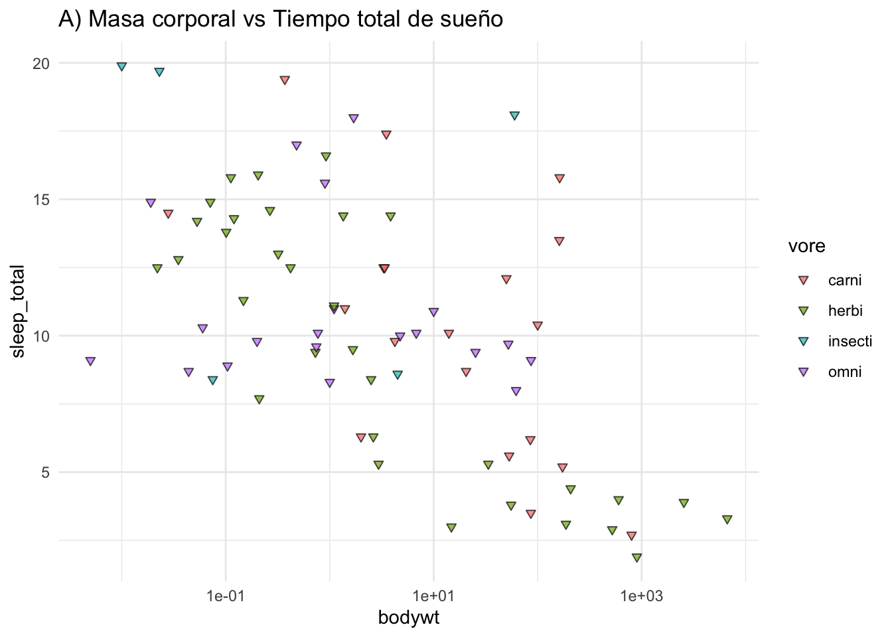
6.2 B) Tiempo de sueño REM
p2 <- ggplot(msleep, aes(sleep_rem)) +
geom_histogram(fill = "red", alpha = 0.5, color = "black") +
ggtitle("B) Tiempo de sueño REM") +
theme_minimal()
p2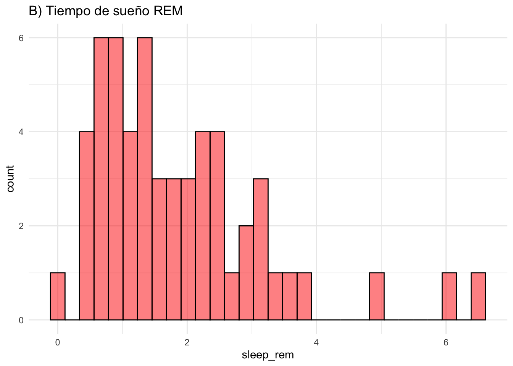
6.3 C) Hábito alimenticio y tamaño corporal
p3 <- ggplot(msleep, aes(vore, log(bodywt))) +
geom_boxplot(aes(fill = vore, alpha = 0.7)) +
geom_jitter(alpha = 0.7) +
ggtitle("C) Hábito alimenticio y tamaño corporal") +
theme_minimal()
p3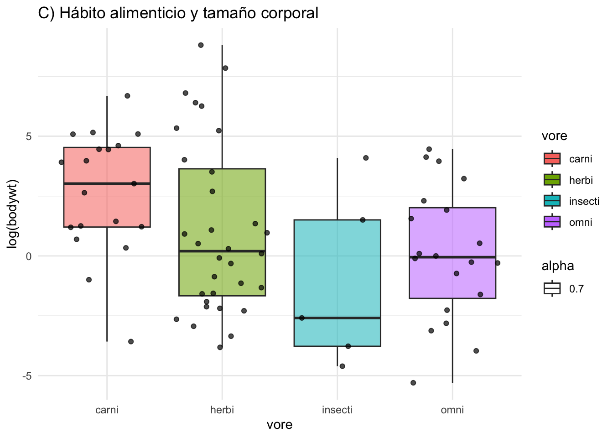
7 Combinación de gráficos
7.1 Unir horizontalmente
combined_horizontal <- p1 + p2
combined_horizontal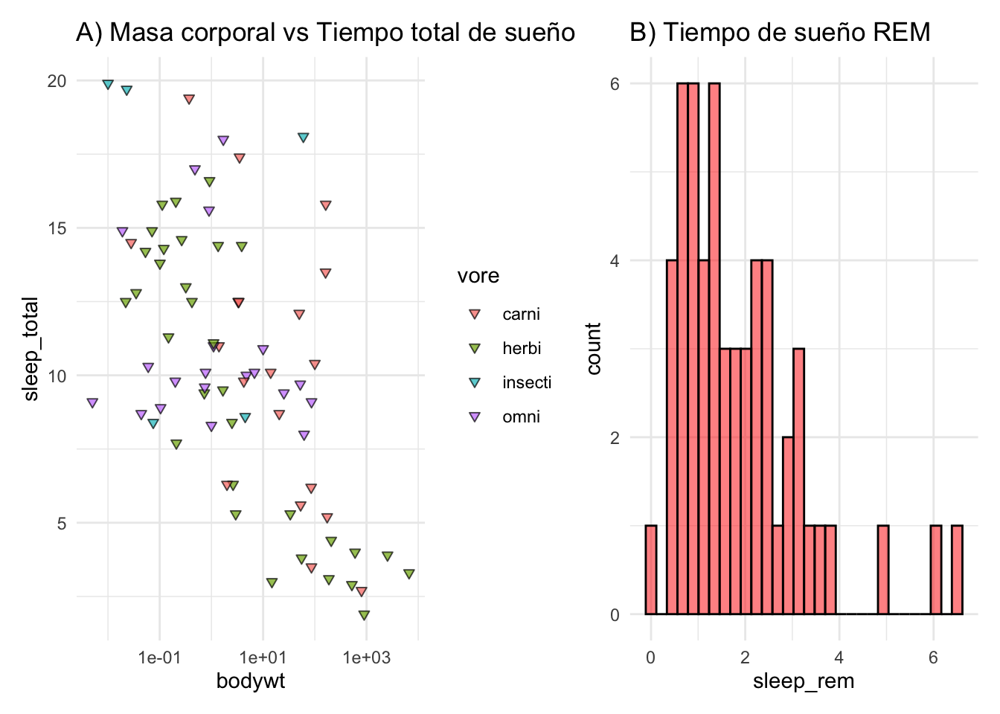
7.2 Unir verticalmente
combined_vertical <- p1 / p2
combined_vertical`stat_bin()` using `bins = 30`. Pick better value with `binwidth`.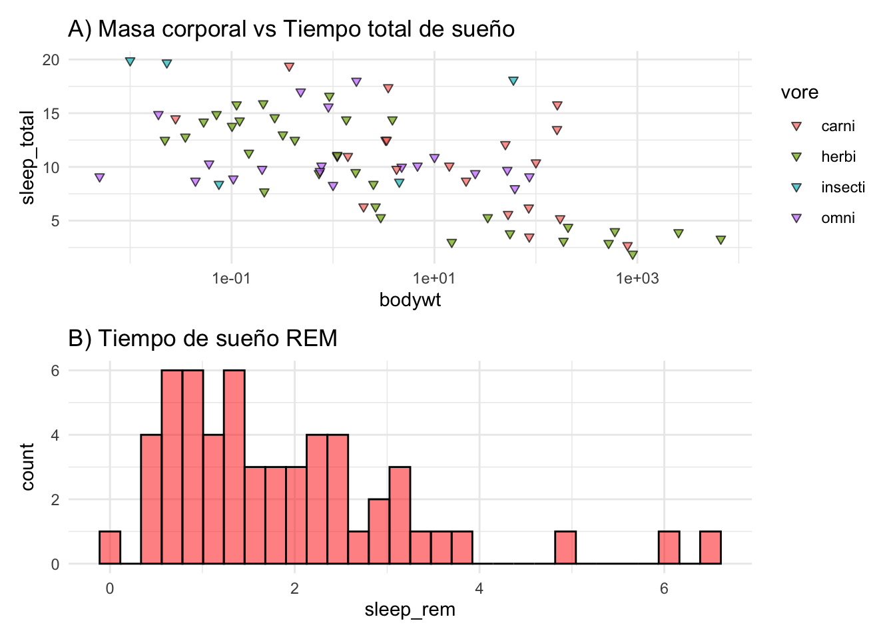
7.3 Combinación compleja
complex_combination <- (p1 | p2) / p3
complex_combination`stat_bin()` using `bins = 30`. Pick better value with `binwidth`.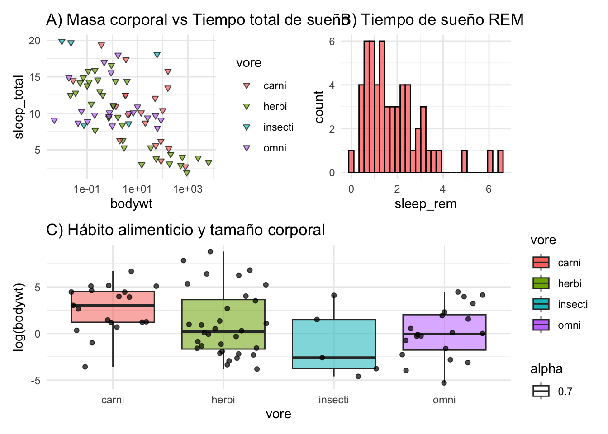
##️ Controlar disposición con plot_layout()
layout_combination <- (p1 + p2 + p3) +
plot_layout(ncol = 2, widths = c(2, 1))
layout_combination`stat_bin()` using `bins = 30`. Pick better value with `binwidth`.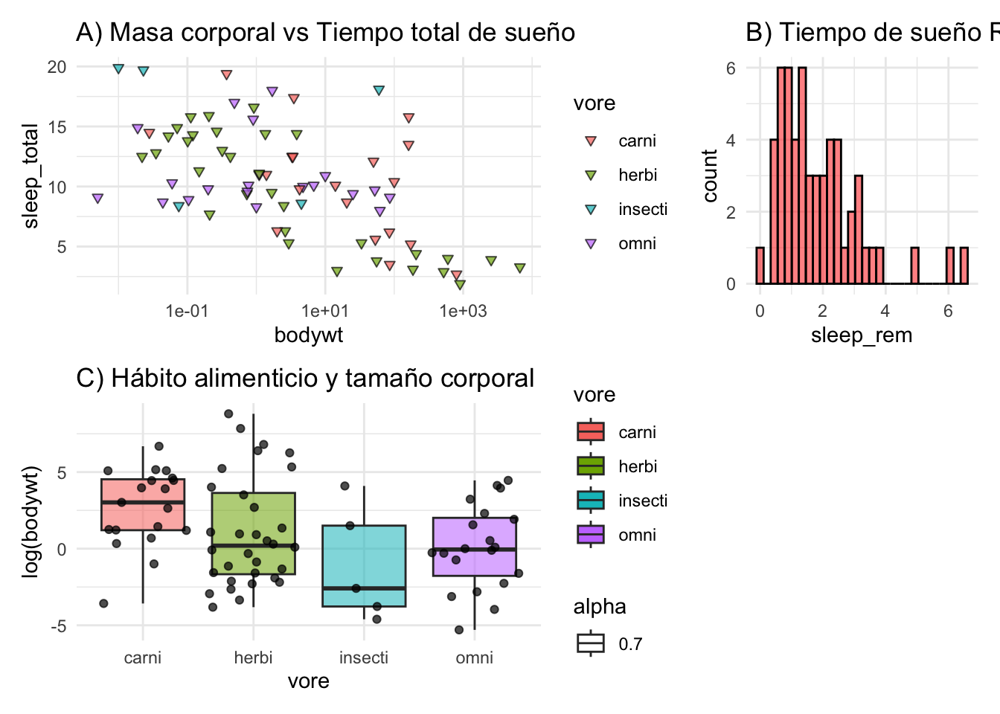
8 Usar wrap_plots() para cuadrículas
wrap_combination <- wrap_plots(p1, p2, p3, ncol = 2)
wrap_combination`stat_bin()` using `bins = 30`. Pick better value with `binwidth`.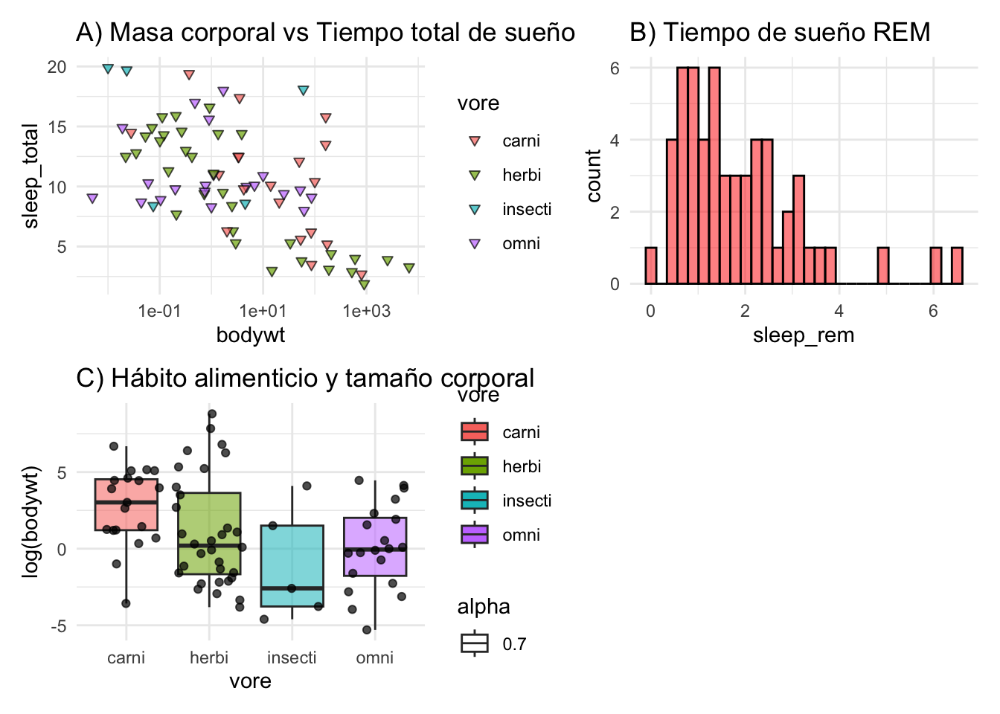
9 Agregar anotaciones y títulos
annotated_combination <- (p1 + p2) +
plot_annotation(
title = "Relación entre Masa Corporal y Diferentes Parámetros de Sueño en Mamíferos",
subtitle = "Datos de msleep",
caption = "Fuente: msleep dataset"
)
annotated_combination`stat_bin()` using `bins = 30`. Pick better value with `binwidth`.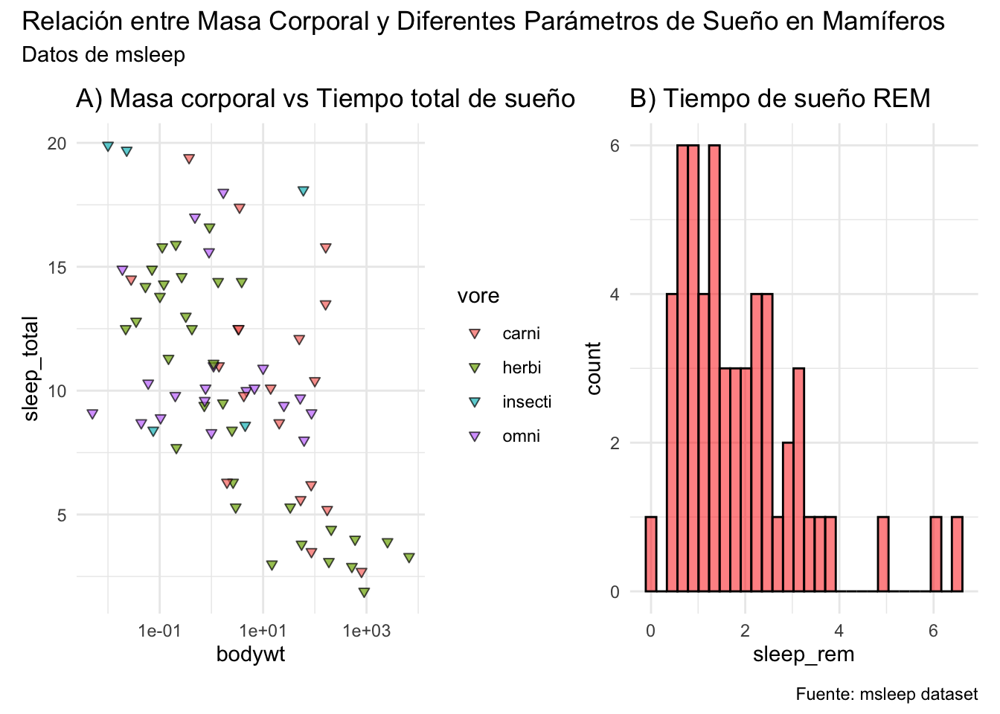
10 Diseños personalizados con area()
design <- c(
area(1, 1, 1, 2),
area(2, 1, 2, 1),
area(2, 2, 2, 2)
)
custom_layout_combination <- wrap_plots(p1, p2, p3, design = design)
custom_layout_combination`stat_bin()` using `bins = 30`. Pick better value with `binwidth`.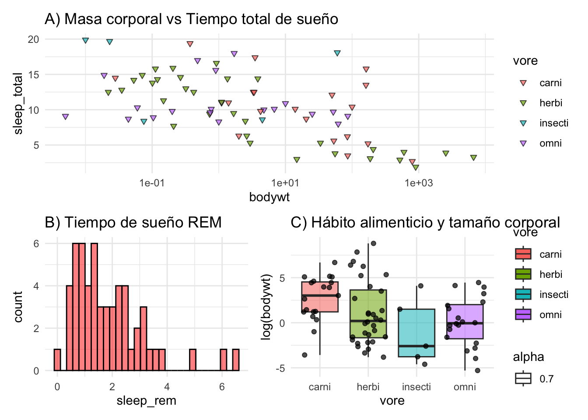
11 Aplicar un tema común
theme_combination <- (p1 + p2 + p3) + theme_minimal()
theme_combination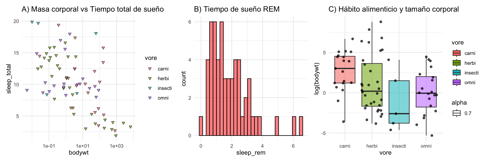
12 Guardar la figura combinada
combined_for_saving <- p1 + p2 + plot_layout(ncol = 1)
ggsave("combined_plot_msleep.png", plot = combined_for_saving, width = 8, height = 6)